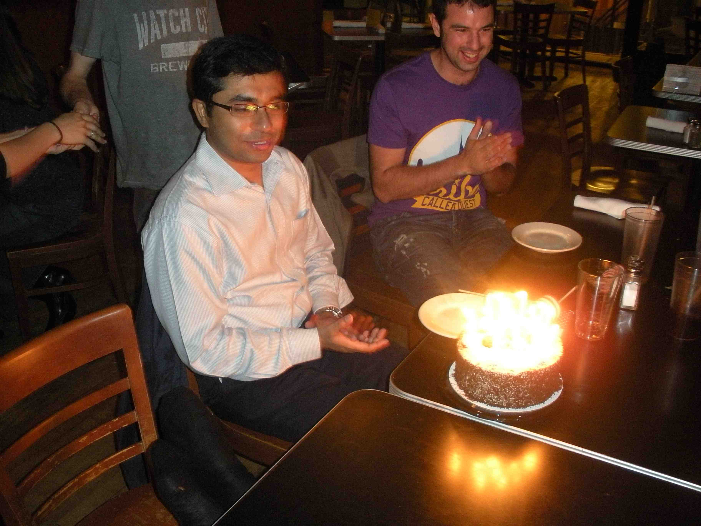
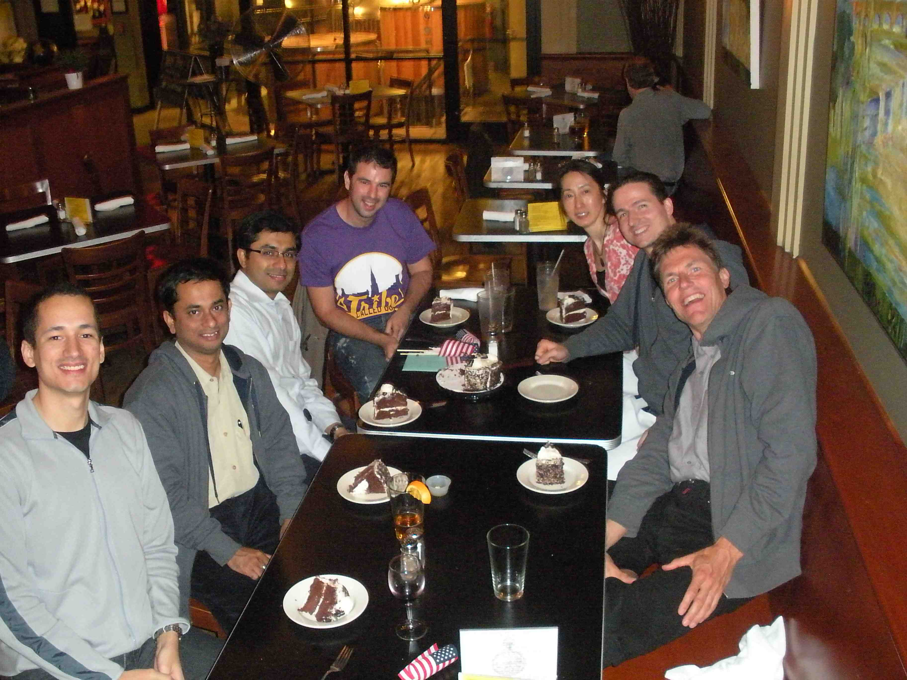

DevLab and Birthday
It is Saikat's birthday today, and he is far away from home and family. We prepared a small celebration with flags and cake and a birthday song for him last night:

Here is the part of the ADN DevTech AEC workgroup that is present to support the DevLab here in Waltham. From the left: Augusto, Partha, Saikat, Michael (Navisworks team), Mikako, Adam, Jeremy:

Happy birthday Saikat!
Meanwhile, we are back at DevLab again with a host of exciting developers and their issues, lots going on and many things entering the pipeline for future posts. One little item that we talked about yesterday and that I have heard about a couple of times in the past is the requirement to open a transaction:
Transaction Required
In Revit 2010, one had the possibility and sometimes the need to open an own transaction. In general, this was not necessary in Revit 2010 when working within the active document, since Revit automatically started up a transaction when launching a new command.
In Revit 2011, this behaviour is still available if the command is compiled with the automatic transaction mode attribute. However, you have more control over transactions if you manage them yourself, setting the manual mode instead.
And you obviously still have no choice but to start your own transaction when manipulating other documents than the current active one.
A number of people have reported seeing the error message 'Sub-Transaction can only be active inside an open Transaction' and other ones similar to it. In every case, the reason really has been the lack of a transaction. One of the DevLab participants was struggling with such an error yesterday, saying: "I am sure I have a transaction open, and yet I get this error message about lacking transactions when I try to add new elements to the family document."
Again, there really was a missing transaction, because the open transaction was for the active project document. The family document opened in the background is a completely different animal, and if you wish to modify it in any way, it will require its own transaction before you can do so. That fixed the problem.